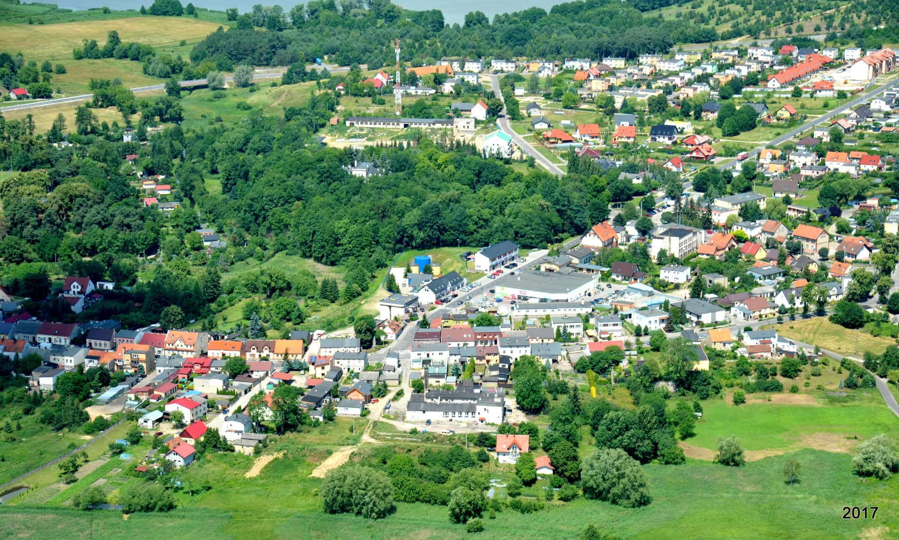
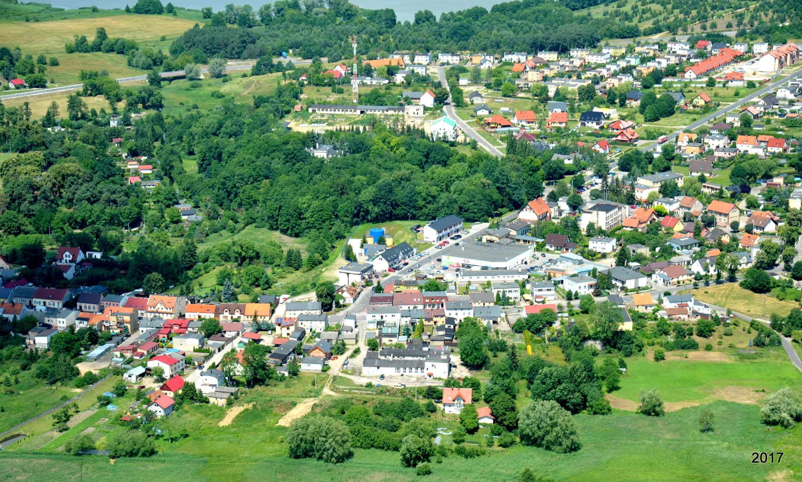

Setki wyjątkowych fotografii uchwyconych w najpiękniejszych zakątkach Polski,
Wysoka jakość zdjęć, które przeniosą Cię w inne miejsca,
Unikalne kadry wykonane przez pasjonatów fotografii,
Możliwość inspiracji do własnych podróży i sesji fotograficznych,
Galeria aktualizowana regularnie o nowe, fascynujące ujęcia,
Podział na różne kategorie: natura, architektura, miasta, krajobrazy,
Przyjazna nawigacja ułatwiająca przeglądanie zdjęć,
...i wiele więcej, co odkryjesz, zaglądając do naszej galerii!